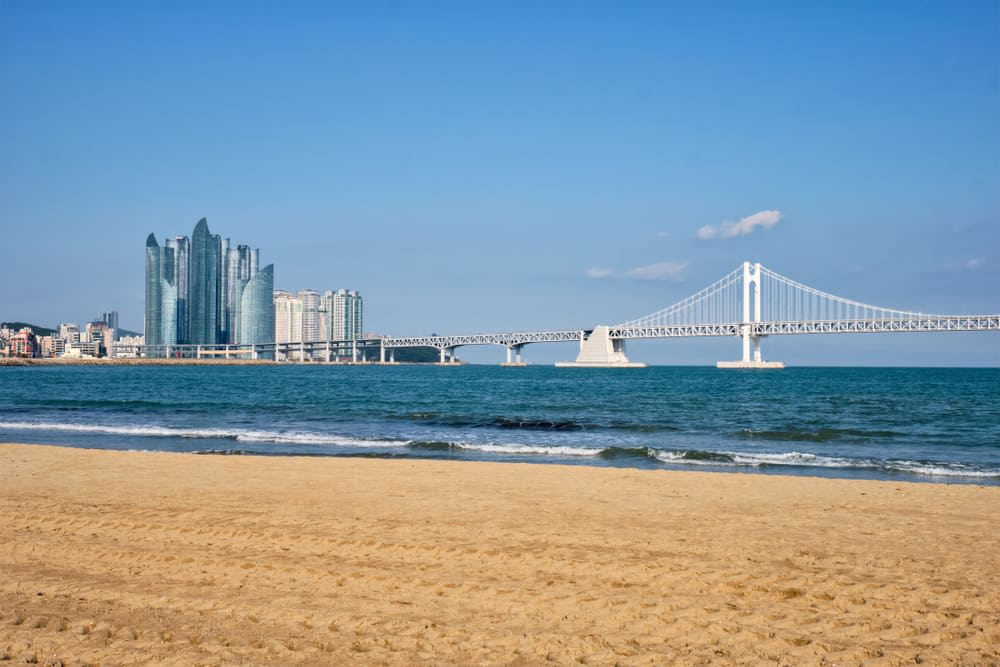
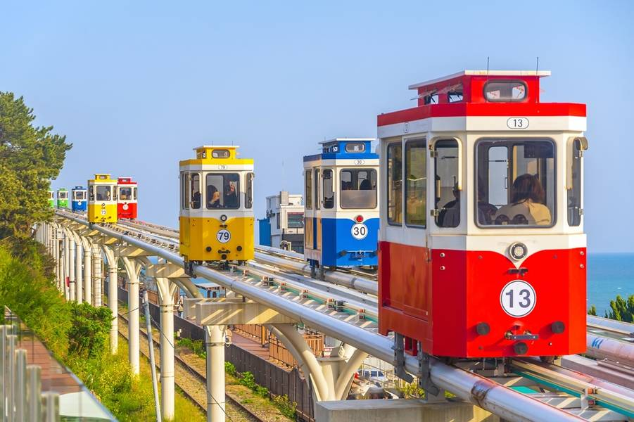

✈ 航班資訊
10/17 去程
米 · BX382 ↗01:55 → 06:30
凌 · LJ752 ↗02:40 → 06:15
10/20 回程
米 · BX381 ↗21:55 → 00:40 翌日
凌 · LJ751 ↗22:00 → 23:40
時間依原行程，均為各地當地時間；實際以航空公司通知為準。


海邊膠囊 · 市場覓食 · 咖啡停靠 · 海上纜車
住宿基地 · 西面DAY BY DAY
行程照原筆記整理，空白時間留給隨興。
OUR SHARED WALLET
拍收據、核對金額，最後再一起算。
A FEW LITTLE REMINDERS
COFFEE, IF WE FEEL LIKE IT
順路的口袋名單，想去再去。
咖啡廳為額外推薦，未排入固定行程。營業時間與菜單請出發前確認。
KEEP THESE CLOSE
機票、地址、已訂好的晚餐，都在這裡。
10/17 去程
10/20 回程
時間依原行程，均為各地當地時間；實際以航空公司通知為準。
住宿地址 · 飯店名稱待補
Busan Pass 已買：落地後於機場 3 號出口領實體卡，再搭機場巴士；松島纜車與斜坡滑車使用 Pass。海邊膠囊：17:30 入場，請核對票券方向。
READY, SET, BUSAN
打個勾，少一點臨出門的慌張。
勾選紀錄保存在目前裝置與瀏覽器。
景點實景照片作為旅行視覺參考；全浦咖啡街照片為街區氛圍，未代表已安排的咖啡店。插圖為本手冊繪製。